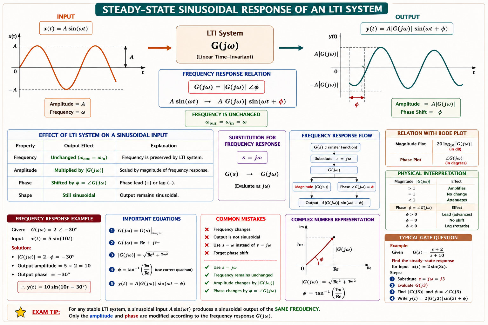
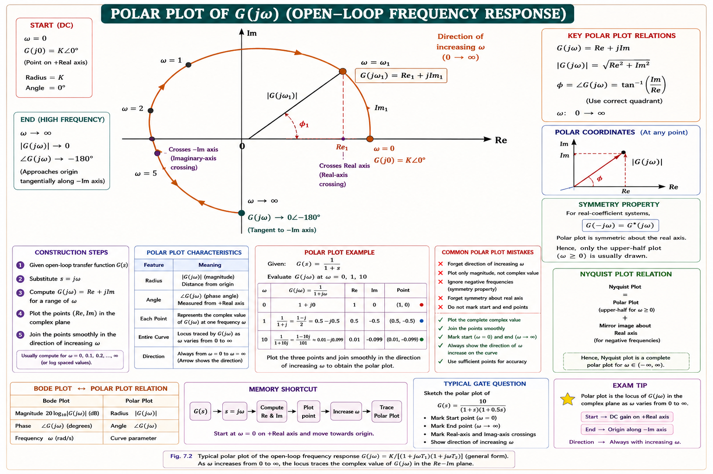
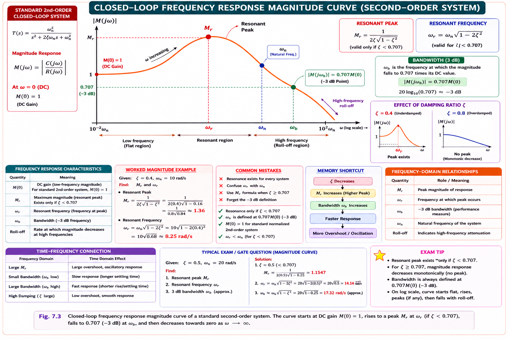
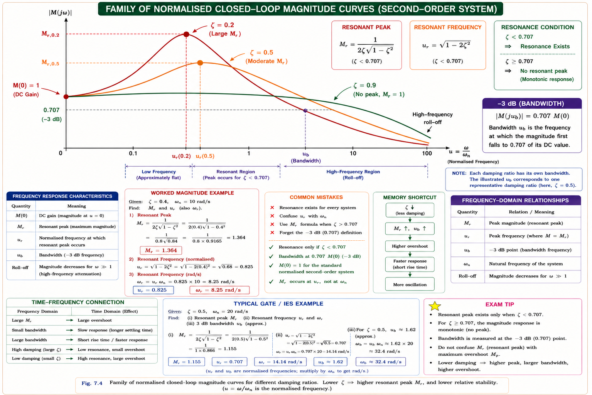
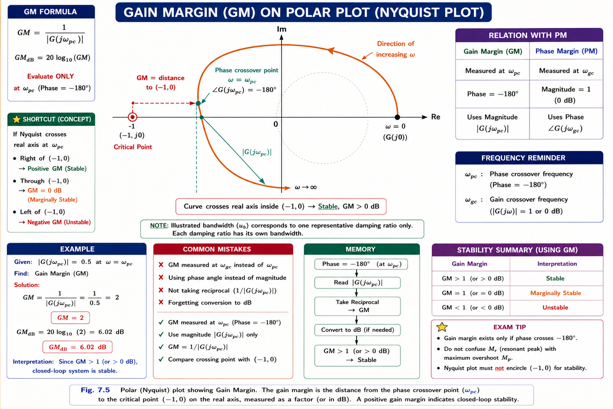
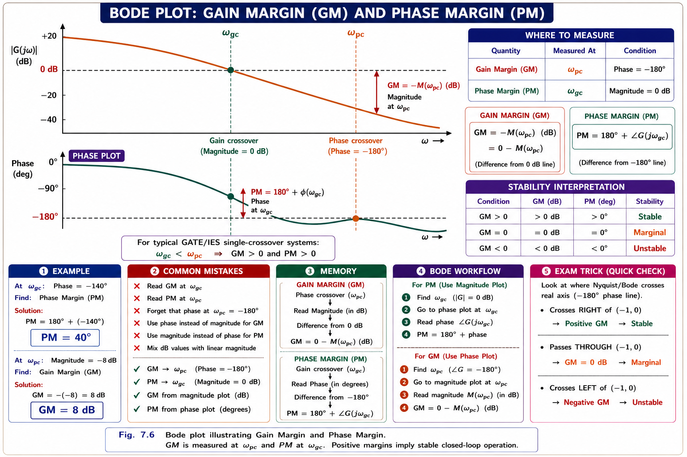

Sinusoidal transfer function, polar plots, resonant peak, resonant frequency, bandwidth, gain margin, and phase margin — the complete frequency-domain toolkit for judging closed-loop stability and performance, with derivations, solved numericals, and GATE/IES exam focus.
So far, stability has been judged using the characteristic equation — Routh-Hurwitz array, root locus, pole locations in the s-plane. All of these need the transfer function in closed algebraic form. But in practice, many systems are known only through experimental data — a motor, an amplifier, or a control loop whose exact transfer function is unknown or too complex to derive analytically. Frequency response analysis solves this problem: it studies how a system reacts to sinusoidal inputs of varying frequency, and from that steady-state behaviour alone, we can predict stability, speed of response, and even reconstruct the transfer function.
A sine wave is the only signal shape that a linear time-invariant (LTI) system never distorts — it comes out the other end still a sine wave, at the same frequency, only scaled in magnitude and shifted in phase. This unique property is exactly why sinusoids are used to "probe" a system's internal dynamics.

For a stable LTI system with transfer function G(s), replacing s by jω converts the Laplace-domain transfer function into the sinusoidal transfer function G(jω). This complex quantity completely characterises the steady-state response to a sinusoid of frequency ω.
Think of G(jω) as a frequency-dependent "gain dial." At each frequency ω, the dial has a setting — how much it amplifies (|G(jω)|) and how much it delays the wave (∠G(jω)). As ω sweeps from 0 to ∞, this dial traces out the complete personality of the system: its speed, its damping, and its stability margins.
Two graphical tools are used to visualise G(jω): the Bode plot (magnitude in dB and phase in degrees, both vs log ω, on separate axes) and the polar plot (a single curve in the complex plane, with ω as the running parameter). GATE and IES frequently test the polar plot because it directly connects to the Nyquist stability criterion.
A polar plot is the locus traced by G(jω) in the complex plane as ω varies from 0 to ∞. At each frequency, plot the point whose distance from the origin is |G(jω)| and whose angle from the positive real axis is ∠G(jω). Joining these points for increasing ω gives a single continuous curve — the polar plot.
(1) Starting point — evaluate |G(jω)| and ∠G(jω) as ω → 0⁺. (2) Ending point — evaluate as ω → ∞. (3) Intersections with real and imaginary axes — set imaginary part or real part of G(jω) to zero and solve for ω. These three checkpoints are usually enough to sketch the overall shape without plotting every point.

| Type / Order | G(jω) form | Start (ω→0) | End (ω→∞) |
|---|---|---|---|
| Type-0, n=2 | K/[(1+jωT₁)(1+jωT₂)] | K ∠0° on +real axis | Origin, tangent to −Im axis |
| Type-1, n=2 | K/[jω(1+jωT)] | ∞ ∠−90° (asymptote ‖ −Im axis) | Origin, tangent to −Re axis |
| Type-2, n=2 | K/[(jω)²] | ∞ ∠−180° (on −Re axis) | Origin along −Re axis |
| Type-1, n=3 | K/[jω(1+jωT₁)(1+jωT₂)] | ∞ ∠−90° | Origin, tangent, ∠−270° |
The starting angle (ω→0) of a polar plot equals −90°×(Type number). Type-0 starts at 0°, Type-1 starts at −90°, Type-2 starts at −180°. The ending angle (ω→∞) equals −90°×(n − m), where n = number of poles and m = number of zeros of G(s).
The polar plot of the open-loop transfer function G(jω)H(jω), together with the Nyquist stability criterion, tells us whether the closed-loop system is stable by observing how the plot encircles the critical point (−1, j0). Frequency-response specifications such as gain margin and phase margin are read directly from how close the polar plot passes to this critical point — this is the crucial link between Chapters 6 and 7.
Just as the time-domain response of a standard second-order system is described by ζ (damping ratio) and ω_n (natural frequency), the frequency-domain closed-loop response is described by a matching set of specifications. These are measured on the closed-loop magnitude plot |M(jω)| = |C(jω)/R(jω)| vs ω.

| Specification | Symbol | Measured On | Meaning |
|---|---|---|---|
| Resonant Peak | M_r | Closed-loop |M(jω)| | Maximum value of the magnitude curve — indicates relative stability / overshoot |
| Resonant Frequency | ω_r | Closed-loop |M(jω)| | Frequency at which M_r occurs — related to speed of response |
| Bandwidth | ω_b | Closed-loop |M(jω)| | Frequency range over which the system responds satisfactorily (up to −3 dB) |
| Gain Margin | GM | Open-loop G(jω)H(jω) | Extra gain (in dB) that can be added before the system turns unstable |
| Phase Margin | PM (γ) | Open-loop G(jω)H(jω) | Extra phase lag (in degrees) that can be added before instability |
M_r, ω_r, and BW are closed-loop specifications — they describe how the final feedback system actually behaves. GM and PM are open-loop specifications — they describe how much margin exists before the open-loop plot would drive the closed-loop system unstable. Both families are connected through ζ and ω_n of an equivalent second-order system, which is why GATE frequently asks you to convert one into the other.
Consider the standard closed-loop second-order system with unity feedback:
Substituting s = jω and letting u = ω/ω_n (normalised frequency):
To find the peak, differentiate |M(jω)| with respect to u and set the derivative to zero. This gives the frequency at which the magnitude is maximum, and substituting back gives the peak value itself.
Students often apply the M_r formula for all ζ. Remember: the peak only exists for lightly damped systems (ζ ≤ 1/√2 ≈ 0.707). For ζ > 0.707 the frequency response has no bump at all — it just rolls off from ω = 0, and M_r = 1 by definition (the maximum value is at DC).
M_r indicates relative stability. A large M_r means the system has low damping and will show large overshoot in the time domain — the frequency-domain "bump" corresponds exactly to the ringing seen in a step response. A well-designed control system usually targets M_r between 1.1 and 1.5 (i.e. 1 to 3.5 dB), matching ζ between roughly 0.4 and 0.7.

The resonant frequency is the ω at which |M(jω)| attains its peak value M_r. Setting d|M(jω)|/du = 0 and solving gives:
As ζ increases from 0 toward 0.707, ω_r decreases from ω_n down to 0, while simultaneously M_r decreases from ∞ down to 1. Both trends move together: lower damping → higher, sharper resonant peak at a frequency close to ω_n; higher damping → flatter response peaking near DC (or no peak at all).
Physically, ω_r indicates how fast the system rings; it is close to, but always slightly less than, the natural frequency ω_n (except at ζ = 0, where they coincide). This mirrors the time-domain fact that the damped natural frequency ω_d = ω_n√(1−ζ²) is also slightly less than ω_n.
Bandwidth is the range of frequencies, from ω = 0, over which the magnitude of the closed-loop frequency response stays within 3 dB (i.e. above 0.707 or 70.7%) of its zero-frequency value. Beyond the bandwidth, the system can no longer faithfully track the input — it attenuates and lags too much to be useful.
Bandwidth is a measure of how fast the system can respond. A wide bandwidth means the system can track rapidly changing (high-frequency) inputs — good for speed. But wide bandwidth also means the system passes high-frequency noise more readily. Every design is therefore a trade-off between speed of response and noise immunity.
Bandwidth is inversely related to rise time — a wider bandwidth means a faster (shorter) rise time in the step response. A commonly used approximate relation, valid for the standard second-order system, connects bandwidth directly to the settling behaviour:
Gain margin quantifies how much the open-loop gain can increase before the closed-loop system becomes unstable. It is measured at the phase crossover frequency ω_pc — the frequency at which the open-loop phase ∠G(jω)H(jω) equals −180°.
At ω_pc, the output is exactly 180° out of phase with the input — negative feedback has effectively turned into positive feedback at this one frequency. If the loop gain at this frequency were to reach exactly 1 (0 dB), the loop would sustain oscillations on its own — marginal stability. GM tells you how many more dB of gain you can add before that happens.

| Condition at ω_pc | GM value | Interpretation |
|---|---|---|
| |G(jω_pc)H(jω_pc)| < 1 | GM > 0 dB | Stable — real-axis crossing is inside (−1,0) |
| |G(jω_pc)H(jω_pc)| = 1 | GM = 0 dB | Marginally stable — crossing exactly at −1 |
| |G(jω_pc)H(jω_pc)| > 1 | GM < 0 dB | Unstable — crossing beyond −1 |
Phase margin quantifies how much additional phase lag can be tolerated before the closed-loop system becomes unstable. It is measured at the gain crossover frequency ω_gc — the frequency at which the open-loop magnitude |G(jω)H(jω)| equals 1 (0 dB).
At ω_gc, the gain is already at the boundary of instability (unity). PM tells you how much more phase lag (delay) the loop can absorb — from extra poles, transport delay, or unmodelled dynamics — before this borderline-gain frequency also reaches −180° and tips the system into instability.

For a stable minimum-phase system, the gain crossover frequency always occurs before the phase crossover frequency: ω_gc < ω_pc. If this ordering reverses (ω_gc > ω_pc), the system is unstable, regardless of the individual numerical values of GM and PM.
For the standard second-order system, phase margin correlates closely with ζ — a very useful design shortcut used throughout control system design and frequently tested in GATE:
A more precise closed-form relation (derived from the standard second-order open-loop transfer function) is:
Gain margin and phase margin together give a complete, quantitative picture of relative stability — far richer than a simple stable/unstable verdict from the Routh array. Both margins must be considered together, because a system can look fine on one measure and marginal on the other.
| GM | PM | Verdict |
|---|---|---|
| Positive (> 0 dB) | Positive (> 0°) | Stable closed-loop system |
| = 0 dB | = 0° | Marginally stable — sustained oscillation |
| Negative (< 0 dB) | Negative (< 0°) | Unstable closed-loop system |
| Very large | Very small | Sluggish but jittery near instability — poor design |
Do not conclude stability from GM or PM alone without checking sign consistency and the ω_gc < ω_pc ordering. For systems with multiple gain/phase crossovers (common in higher-order or non-minimum-phase systems), a positive GM and PM computed at the "wrong" crossover can give a false stable verdict — always verify with the full Nyquist plot when in doubt.
Typical GATE questions give an open-loop transfer function and ask you to find ω_pc, ω_gc, GM, and PM directly from the equations, or give a Bode/polar sketch and ask you to read off the margins graphically, or give ζ and ask for the corresponding M_r, ω_r, and PM using the standard second-order relations. Mastering the algebra (setting phase = −180° or magnitude = 1) is the single most important exam skill in this chapter. 🟢 HIGH
Check validity: ζ = 0.5 < 0.707, so M_r and ω_r formulas apply.
Note ω_r (7.07) < ω_n (10) < ω_b (12.72) — this ordering always holds for 0 < ζ < 0.707. M_r = 1.155 (≈ 1.25 dB) is a healthy, moderate peak.
Step 1 — Substitute s = jω:
Step 2 — Phase expression:
Set this equal to −180° and solve for ω_pc:
Step 3 — Magnitude at ω_pc:
Step 4 — Gain Margin:
GM = −4.44 dB (negative) means this closed-loop system with K = 10 is unstable. The gain would need to be reduced (multiplied by 0.6, i.e. by roughly 4.44 dB) to reach the stability boundary.
Step 1 — Magnitude condition:
Let x = ω²: x² + x − 1 = 0 → x = (−1+√5)/2 = 0.618 → ω_gc = √0.618 = 0.786 rad/s
Step 2 — Phase at ω_gc:
Step 3 — Phase Margin:
PM ≈ 51.8° corresponds (using ζ ≈ PM/100) to ζ ≈ 0.52 — a well-damped, healthy design. Since this G(s)H(s) never reaches −180° phase (max phase lag → −180° only as ω → ∞), the gain margin is theoretically infinite.
Step 1 — Estimate ζ:
Step 2 — Resonant peak:
Answer: ζ ≈ 0.45, M_r ≈ 1.24 (≈ 1.87 dB) — a moderate, well-behaved peak, typical of a solidly designed feedback loop.
Phase crossover frequency ω_pc is independent of K (it depends only on the phase, and gain K does not affect phase). So ω_pc = 1.414 rad/s still. At K = 10, |G(jω_pc)H(jω_pc)| = 1.667. For a new gain K′, magnitude scales linearly with K:
We need GM = 6 dB, i.e. the ratio 1/|G H| = 10^(6/20) = 1.995, so |GH| = 0.5012:
Answer: K′ ≈ 3.0 gives GM = 6 dB. This shows how gain margin scales directly (in dB) as 20 log₁₀(K), a fast mental-math shortcut for GATE.
The following sub-topics consistently appear in GATE EE (Control Systems section) and IES E&T:
For a unity-feedback second-order system, if the phase margin is found to be 60°, the damping ratio ζ is approximately:
Explanation: Using the rule-of-thumb ζ ≈ PM/100 = 60/100 = 0.6. This approximation is accurate for PM up to about 70° and is the fastest route to the answer in an exam setting; the exact formula gives a very close value.
For a stable, minimum-phase closed-loop control system with positive gain margin and positive phase margin, which of the following must be true?
Explanation: Stability requires the gain to drop below 0 dB before the phase reaches −180°. This means the gain crossover frequency must occur earlier (at lower ω) than the phase crossover frequency: ω_gc < ω_pc.
For the standard second-order closed-loop system, the resonant peak M_r exists (is finite and greater than 1) only when:
Explanation: The condition 0 ≤ ζ ≤ 1/√2 (≈ 0.707) is derived from requiring the derivative-based critical point to be a genuine maximum (not at ω = 0). Beyond ζ = 0.707, the magnitude curve decreases monotonically from ω = 0 and M_r is simply 1.
The polar plot of G(jω)H(jω) = K/(jω)² starts (as ω → 0⁺) at:
Explanation: Using the memory rule, starting angle = −90° × (Type number). For a Type-2 system, starting angle = −90° × 2 = −180°, with magnitude tending to infinity — the plot begins on the negative real axis, far from the origin.
Gain Margin is measured at the Phase crossover (where phase = −180°). Phase Margin is measured at the Gain crossover (where gain = 0 dB). The names are deliberately "crossed" — remember it as GM↔Phase, PM↔Gain, and you will never mix up which crossover frequency to use.
As damping ratio ζ increases: M_r decreases, Resonant frequency ω_r decreases, Bandwidth ω_b decreases. All three frequency-domain indicators move together with damping — memorise this single chain instead of three separate formulas.
Have a question on polar plots, resonant peak, bandwidth, gain margin, or phase margin? Type below or pick a suggestion.
\(G(j\omega) = G(s)|_{s=j\omega}\). \(|G(j\omega)|\) and \(\angle G(j\omega)\) describe steady-state amplitude scaling and phase shift for a sinusoidal input at each \(\omega\).
Locus of \(G(j\omega)\) in complex plane, \(\omega: 0 \to \infty\). Start angle = \(-90^\circ \times \text{Type}\). End angle = \(-90^\circ \times (n-m)\). Basis of the Nyquist criterion around \((-1, j0)\).
\(M_r = \frac{1}{2\zeta\sqrt{1-\zeta^2}}\), \(\omega_r = \omega_n\sqrt{1-2\zeta^2}\), valid only for \(\zeta \le 0.707\). Both decrease as \(\zeta\) increases; no peak beyond \(\zeta = 0.707\).
\(\omega_b = \omega_n\sqrt{(1-2\zeta^2)+\sqrt{4\zeta^4-4\zeta^2+2}}\). Frequency range up to \(-3\text{ dB}\). Wider BW → faster response, more noise sensitivity.
\(GM = 20\log_{10}[1/|GH(j\omega_{pc})|]\) at phase = \(-180^\circ\). \(GM > 0\text{ dB} \to\) stable. Tells extra gain tolerable before instability.
\(PM = 180^\circ + \angle GH(j\omega_{gc})\) at \(|GH| = 1\). \(\zeta \approx PM/100\). \(PM > 0^\circ \to\) stable. Requires \(\omega_{gc} < \omega_{pc}\) for a stable minimum-phase system.
All technical content is derived from the following standard textbooks and learning resources. All explanations, derivations, diagrams and examples are original to Aarova AI.